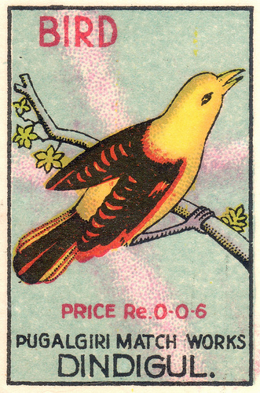

Saturday, August the 15th, 2009
back to: title, date or indexes
Gawp-eyed and jaw dropped, drool dribbling down my chin, I remain astonished at the seemingly fathomless ornithological ignorance I find around me. Only the other day, as I passed an aspen clump in which dozens of birds were perched, chirping, I had to explain, slowly and patiently, to my walking companion that the noise he heard was birdsong, that it was made by birds, that birds were, for the most part, aerial life-forms with wings and beaks and feathers, and that though they were capable of flight they often perched on tree-branches and other handy surfaces. This intelligence seemed to dumbfound him. It was with a certain desolation that I realised this said more about my choice of walking companion than it did about the companion himself. He is a harmless enough soul, but his brain has been Jesuit-damaged, and his prospects are grim indeed. My own prospects are not much better, but at least I know what a bird is.
And the reason I know is that I carry always with me, tucked in my pocket, an aide memoire, like the one shown below, courtesy of Agence Eureka. Might I suggest that you print it out, have it laminated, and keep it about your person at all times? Then you, too, will know what I know, at least in the ornithological field.
